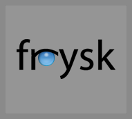

Overview |
|
|  |
The goal of the frysk project is to create an intelligent, distributed, always-on system monitoring and debugging tool that allows developers and system administrators to monitor running processes and threads (including creation and destruction events), monitor the use of locking primitives, expose deadlocks, gather data and debug any given process by either choosing it from a list or by accepting frysk's offer to open a source code or other window on a process that is in the process of crashing or that has been misbehaving in certain user-definable ways. frysk is free software and so is generally and freely available as both a research and development platform. NewsA paper on frysk is going to be presented at OLS, see you there. More papers to follow! Where Next?
|